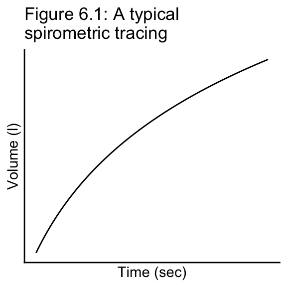

qchisq(p = 1 - 0.1, df = 5)[1] 9.236David Gerard
September 30, 2025
These practice problems mostly come from Rosner’s publicly available study sheet at the books companion website. The solutions are my own, since we differ slightly on what we are looking for in the solutions.
A case-control study of the effectiveness of the Pap smear in preventing cervical cancer (by identifying precancerous lesions) was performed. It was found that 28.1% of 153 cervical-cancer cases and 7.2% of 153 age-matched (within 5 years) controls had never had a Pap smear prior to the time of the case’s diagnosis.
Hypertensive patients are screened at a neighborhood health clinic and are given methyl dopa, a strong antihypertensive medication for their condition. They are asked to come back 1 week later and have their blood pressures measured again. Suppose the initial and follow-up systolic blood pressures of the patients are given in the following data frame.
# A tibble: 10 × 3
patient_number initial_sbp followup_sbp
<int> <dbl> <dbl>
1 1 200 188
2 2 194 212
3 3 236 186
4 4 163 150
5 5 240 200
6 6 225 222
7 7 203 190
8 8 180 154
9 9 177 180
10 10 240 225To test the effectiveness of the drug, we want to measure the difference (D) between initial and follow-up blood pres- sures for each person.
Data from U.S. cancer-tumor registries suggest that of all people with the type of lung cancer where surgery is the recommended therapy, 40% survive for 3 years from the time of diagnosis and 33% survive for 5 years.
A recent hypothesis states that vigorous exercise is an effective preventive measure for subsequent cardiovascular death. To test this hypothesis, a sample of 750 men aged 50–75 who report that they jog at least 10 miles per week is ascertained. After 6 years, 64 have died of cardiovascular disease.
A group of 60 men under the age of 55 with a prior history of myocardial infarction are put on a strict vegetarian diet as part of an experimental program. After 5 years, 3 men from the group have died.
A spirometric tracing is a standard technique used to measure pulmonary function. These tracings represent plots of the volume of air expelled over a 6-second period and tend to look like Figure 6.1. One quantity of interest is the slope at various points along the curve. The slopes are referred to as flow rates. A problem that arises is that the flow rates cannot be accurately measured, and some observer error is always introduced. To quantify the observer error, an observer measures the flow at 50% of forced vital capacity (volume as measured at 6 seconds) twice on tracings from 10 different people. A machine called a digitizer can trace the curves automatically and can estimate the flow mechanically. Suppose the digitizer is also used to measure the flow twice on these 10 tracings. The data are given in the data frame below.

flow_rates <- tibble(
Person = 1:10,
Manual_replicate1 = c(1.80, 2.01, 1.63, 1.54, 2.21, 4.16, 3.02, 2.75, 3.03, 2.68),
Manual_replicate2 = c(1.84, 2.09, 1.52, 1.49, 2.36, 4.08, 3.07, 2.80, 3.04, 2.71),
Digitizer_replicate1 = c(1.82, 2.05, 1.62, 1.49, 2.32, 4.21, 3.08, 2.78, 3.06, 2.70),
Digitizer_replicate2 = c(1.83, 2.04, 1.60, 1.45, 2.36, 4.27, 3.09, 2.79, 3.05, 2.70)
)Find a 95% CI for the standard deviation of the difference between the first and second replicates using the manual method.
Answer Problem 6.18 for the difference between the first and second replicates using the digitizer method.
Suppose we want to compare the variability of the two methods within the same person. Let \(x_{i1}\) , \(x_{i2}\) represent the 2 replicates for the \(i\)th person using the manual method, and let \(y_{i1}, y_{i2}\) represent the 2 replicates for the \(i\)th person using the digitizer method. Let \[ d_i = |x_{i1} - x_{i2}| - |y_{i1} - y_{i2}| \] Then, \(d_i\) is a measure of the difference in variability using the two methods. Assume that \(d_i\) is normally distributed with mean \(\mu_d\) and variance \(\sigma_d^2\)
Suppose a group of mice are inoculated with a uniform dose of a specific type of bacteria and all die within 24 days, with the distribution of survival times given in the following data frame.
Assume that the underlying distribution of survival times is normal. Estimate the probability \(p\) that a mouse will survive for 20 or more days.
Suppose we are not willing to assume that the underlying distribution is normal. Estimate the probability \(p\) that a mouse will survive for 20 or more days.
In Table 2.1 below, data on serum-cholesterol levels of 24 hospital employees before and after they adopted a vegetarian diet are provided.
| Table 2.1 Serum-Cholesterol levels before and after adopting a vegetarian diet (mg/dL) | |||
| Subject | Before | After | Before - After |
|---|---|---|---|
| 1 | 195.00 | 146.0 | 49.00 |
| 2 | 145.00 | 155.0 | -10.00 |
| 3 | 205.00 | 178.0 | 27.00 |
| 4 | 159.00 | 146.0 | 13.00 |
| 5 | 244.00 | 208.0 | 36.00 |
| 6 | 166.00 | 147.0 | 19.00 |
| 7 | 250.00 | 202.0 | 48.00 |
| 8 | 236.00 | 215.0 | 21.00 |
| 9 | 192.00 | 184.0 | 8.00 |
| 10 | 224.00 | 208.0 | 16.00 |
| 11 | 238.00 | 206.0 | 32.00 |
| 12 | 197.00 | 169.0 | 28.00 |
| 13 | 169.00 | 182.0 | -13.00 |
| 14 | 158.00 | 127.0 | 31.00 |
| 15 | 151.00 | 149.0 | 2.00 |
| 16 | 197.00 | 178.0 | 19.00 |
| 17 | 180.00 | 161.0 | 19.00 |
| 18 | 222.00 | 187.0 | 35.00 |
| 19 | 168.00 | 176.0 | -8.00 |
| 20 | 168.00 | 145.0 | 23.00 |
| 21 | 167.00 | 154.0 | 13.00 |
| 22 | 161.00 | 153.0 | 8.00 |
| 23 | 178.00 | 137.0 | 41.00 |
| 24 | 137.00 | 125.0 | 12.00 |
| Mean | 187.79 | 168.2 | 19.54 |
| SD | 33.16 | 26.8 | 16.81 |
| n | 24.00 | 24.0 | 24.00 |
What is your best estimate of the effect of adopting a vegetarian diet on change in serum-cholesterol levels?
Some physicians consider only changes of at least 10 mg/dL (the same units as in Table 2.1) to be clinically significant.
Among people with a clinically significant change in either direction, what is the best estimate of the proportion of subjects with a clinically significant decline in cholesterol?
Wheezing is a common respiratory symptom reported by both children and adults. A study is conducted to assess whether either personal smoking or maternal smoking are associated with wheezing in children ages 6–19.
Suppose that 400 children in this age group whose mothers smoke are assessed in 1985, and it is found that 60 report symptoms of wheezing. Provide a point estimate and a 95% CI for the underlying rate of wheezing in the population of children whose mothers smoke.
Suppose the rate of wheezing among children ages 6–19 in the general population is 10%. What can you conclude from the results in Problem 6.38?
Suppose we have a subgroup of 30 children where both the mother and the child are smokers. Six of these 30 children have wheezing symptoms. Provide a 95% CI for the true rate of wheezing in this population.